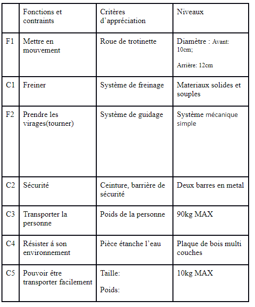
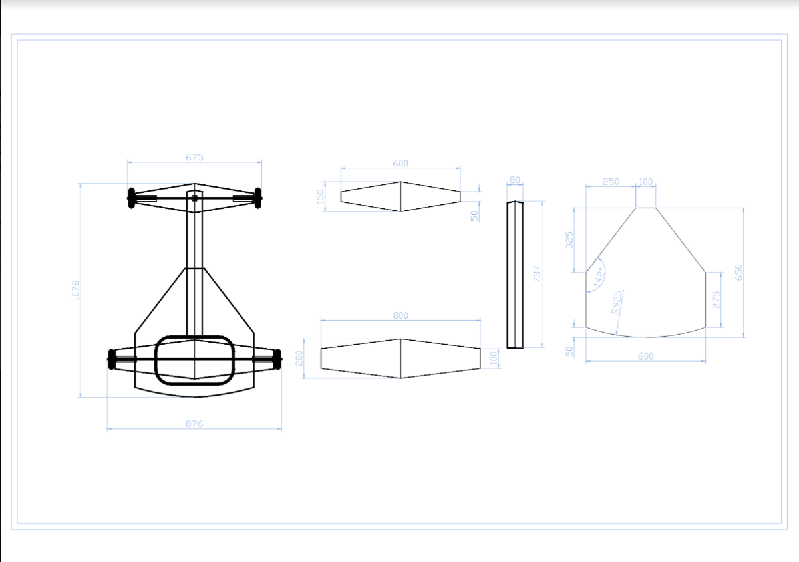

Le progrès jusqu'à présent
Notre objectif

Pendant le cour de technologie, nous avons essayé le french cart qui était fait par les plus grands. Pendant le test nous avons trouvé des aspects qui peuvent êtres améliorés comme les freins. Nous avons également réfléchi à la façon dont nous pourrions améliorer nоtre french cart.04/01/2022
Étape1:Cahier de charges et eco-conception
{kind=link}
Mais, c'est quoi un cahier de charges??
C'est un dossier utilisé dans le cadre du developpement d'un projet, redigé selon des normes, des contraintes, et des fonctions, mais également des élements nécessaire a sa réalisation. Le bois que nous utilisons est 100 % recyclable, très résistant, peut être brûlé et réutilisé plusieurs fois.01/02/2022Étape2:Modélisation 3D du french cart

Les dimensions
Voici les dimensions du french cart qu’on va utiliser pour fabriquer les parts.
Visite chez KINETIK (résumé)

Kinetik est une entreprise qui spécialise en cartes électriques. Leur premier prototype était une voiture électrique. Malheuresement elle a brûlé dans leur usine. Après cet incendie, ils ont décidé de continuer avec des cartes et non pas des voitures. Leurs cartes utilisent des parties qui sont 3D imprimé par eux mêmes. Leur projet est une des meilleures machines sur le marché. Il utilise trois batteries, un moteur avec une capacité maximale de 50 chevaux. Ils ont aussi présenté un projet qui a le but de donner un chance aux élèves de pratiquer sur les cartes, mêmes les conduire.
Compte rendu complet
Kinetik est une entreprise spécialisée dans les cartes électriques. Leur projet principal est l'une des meilleures machines sur le marché, composée de trois batteries, d'un moteur d'une puissance maximale de 50 chevaux, de freins et d’une ribambelle de capteurs voué à notre sécurité. L'entreprise vise à offrir aux étudiants intéressés dans le domaine des technologies l'opportunité d'appliquer leurs connaissances sur un objet technique. Le projet est commercialisé sous forme de kits, donnant aux élèves la responsabilité de reconstruire et de personnaliser ces machines selon leurs préférences.